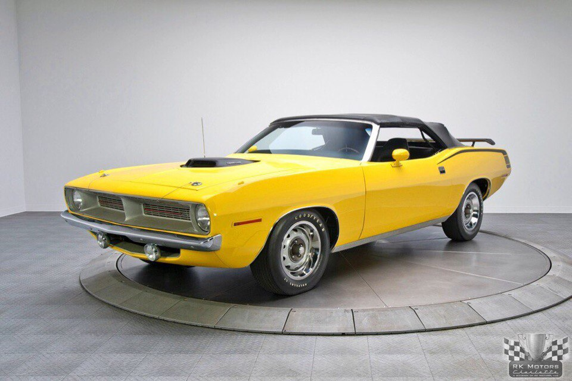

The Plymouth Barracuda is a two-door car that was manufactured by Plymouth from the 1964 to 1974 model years.
The first-generation Barracuda, a fastback A-body coupe based on the Plymouth Valiant, had distinctive wraparound back glass and was available from 1964 to 1966.
The second-generation 1967 to 1969 Barracuda, though still Valiant-based, was heavily redesigned. Second-generation A-body cars were available in fastback, notchback, and convertible versions.
The 1970 to 1974 E-body Barracuda, no longer Valiant-based, was available as a coupe and a convertible, both of which were very different from the previous models. The final model year for the Barracuda was 1974.